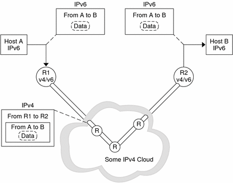

Previous
Previous
IPv6 Tunnels
To minimize any dependencies at a dual-stack, IPv4/IPv6 site, all the routers in the path between two IPv6 nodes do not need to support IPv6. The mechanism that supports such a network configuration is called tunneling. Basically, IPv6 packets are placed inside IPv4 packets, which are then routed through the IPv4 routers. The following figure illustrates the tunneling mechanism through IPv4 routers, which are indicated in the figure by "R."
Figure 11-5 IPv6 Tunneling Mechanism
The Solaris IPv6 implementation includes two types of tunneling mechanisms:
Configured tunnels between two routers, as in Figure 11-5
Automatic tunnels that terminate at the endpoint hosts
A configured tunnel is currently used on the Internet for other purposes, for example, on the MBONE, the IPv4 multicast backbone. Operationally, the tunnel consists of two routers that are configured to have a virtual point-to-point link between the two routers over the IPv4 network. This kind of tunnel is likely to be used on some parts of the Internet for the foreseeable future.
Automatic tunnels require IPv4-compatible addresses. Automatic tunnels can be used to connect IPv6 nodes when IPv6 routers are not available. These tunnels can originate either on a dual-stack host or on a dual-stack router by configuring an automatic tunneling network interface. The tunnels always terminate on the dual-stack host. These tunnels work by dynamically determining the destination IPv4 address, which is the endpoint of the tunnel, by extracting the address from the IPv4-compatible destination address.
Configured Tunnels
Tunneling interfaces have the following format:
ip.tun ppa |
ppa is the physical point of attachment.
At system startup, the tunneling module (tun) is pushed, by the ifconfig command, on top of IP to create a virtual interface. The push is accomplished by creating the appropriate hostname6.* file.
For example, to create a tunnel to encapsulate IPv6 packets over an IPv4 network, IPv6 over IPv4, you would create the following file name:
/etc/hostname6.ip.tun0 |
The content of this file is passed to ifconfig after the interfaces have been plumbed. The content becomes the parameters that are necessary to configure a point-to-point tunnel.
Example 11-11 hostname6.ip.tun0 File for an IPv6 Over IPv4 Tunnel
The following is an example of entries in the hostname6.ip.tun0 file:
tsrc 10.10.10.23 tdst 172.16.7.19 up addif 2001:db8:3b4c:1:5678:5678::2 up |
In this example, the IPv4 source and destination addresses are used as tokens to autoconfigure IPv6 link-local addresses. These addresses are the source and destination for the ip.tun0 interface. Two interfaces are configured. The ip.tun0 interface is configured. A logical interface, ip.tun0:1, is also configured. The logical interface has the source and destination IPv6 addresses specified by the addif command.
The contents of these configuration files are passed to ifconfig without change when the system is started in multiuser mode. The entries in Example 11-11 are equivalent to the following:
# ifconfig ip.tun0 inet6 plumb # ifconfig ip.tun0 inet6 tsrc 10.0.0.23 tdst 172.16.7.19 up # ifconfig ip.tun0 inet6 addif 2001:db8:3b4c:1:5678:5678::2 up |
The following shows the output of ifconfig -a for this tunnel.
ip.tun0: flags=2200850<UP,POINTOPOINT,RUNNING,MULTICAST,
NONUD,IPv6> mtu 1480 index 6
inet tunnel src 10.0.0.23 tunnel dst 172.16.7.19
inet6 fe80::c0a8:6417/10 --> fe80::c0a8:713
ip.tun0:1: flags=2200850<UP,POINTOPOINT,RUNNING,MULTICAST,NONUD,IPv6> mtu 1480
index 5
inet6 2001:db8:3b4c:1:5678:5678::2
|
You can configure more logical interfaces by adding lines to the configuration file by using the following syntax:
addif IPv6-source IPv6-destination up |
Note - When either end of the tunnel is an IPv6 router that advertises one or more prefixes over the tunnel, you do not need addif commands in the tunnel configuration files. Only tsrc and tdst might be required because all other addresses are autoconfigured.
In some situations, specific source and destination link-local addresses need to be manually configured for a particular tunnel. Change the first line of the configuration file to include these link-local addresses. The following line is an example:
tsrc 10.0.0.23 tdst 172.16.7.19 fe80::1/10 fe80::2 up |
Notice that the source link-local address has a prefix length of 10. In this example, the ip.tun0 interface resembles the following:
ip.tun0: flags=2200850<UP,POINTOPOINT,RUNNING,MULTICAST,NONUD,IPv6> mtu 1480
index 6
inet tunnel src 10.0.0.23 tunnel dst 172.16.7.19
inet6 fe80::1/10 --> fe80::2
|
To create a tunnel to encapsulate IPv6 packets over an IPv6 network, IPv6 over IPv6, you create the following file name:
/etc/hostname6.ip6.tun0 |
Example 11-12 hostname6.ip6.tun0 File for an IPv6 over IPv6 Tunnel
The following is an example of entries in the hostname6.ip6.tun0 file for IPv6 encapsulation over an IPv6 network:
tsrc 2001:db8:3b4c:114:a00:20ff:fe72:668c
tdst 2001:db8:15fa:25:a00:20ff:fe9b:a1c3
fe80::4 fe80::61 up
|
To create a tunnel to encapsulate IPv4 packets over an IPv6 network, IPv4 over IPv6, you would create the following file name:
/etc/hostname.ip6.tun0 |
Example 11-13 hostname.ip6.tun0 File for an IPv4 Over IPv6 Tunnel
The following is an example of entries in the hostname.ip6.tun0 file for IPv4 encapsulation over an IPv6 network:
tsrc 2001:db8:3b4c:114:a00:20ff:fe72:668c
tdst 2001:db8:15fa:25:a00:20ff:fe9b:a1c3
10.0.0.4 10.0.0.61 up
|
To create a tunnel to encapsulate IPv4 packets over an IPv4 network, IPv4 over IPv4, you would create the following file name:
/etc/hostname.ip.tun0 |
Example 11-14 hostname.ip.tun0 for an IPv4 Over IPv4 Tunnel
The following is an example of entries in the hostname.ip.tun0 file for IPv4 encapsulation over an IPv4 network:
tsrc 172.16.86.158 tdst 192.168.86.122 10.0.0.4 10.0.0.61 up |
For specific information about tun, see the tun(7M) man page. For a general description of tunneling concepts during the transition to IPv6, see Overview of IPv6 Tunnels. For a description of procedures for configuring tunnels, see Tasks for Configuring Tunnels for IPv6 Support (Task Map).
6to4 Automatic Tunnels
The Solaris OS includes 6to4 tunnels as a preferred interim method for making the transition from IPv4 to IPv6 addressing. 6to4 tunnels enable isolated IPv6 sites to communicate across an automatic tunnel over an IPv4 network that does not support IPv6. To use 6to4 tunnels, you must configure a boundary router on your IPv6 network as one endpoint of the 6to4 automatic tunnel. Thereafter, the 6to4 router can participate in a tunnel to another 6to4 site, or, if required, to a native IPv6, non-6to4 site.
This section provides reference materials on the following 6to4 topics:
Topology of the 6to4 tunnel
6to4 addressing, including the format of the advertisement
Description of packet flow across a 6to4 tunnel
Topology of a tunnel between a 6to4 router and a 6to4 relay router
Points to consider before you configure 6to4 relay router support
More information about 6to4 routing is available from the following sources.
Task or Detail | For Information |
|---|---|
Tasks for configuring a 6to4 tunnel | |
6to4-related RFC | |
Detailed information about the 6to4relay command, which enables support for tunnels to a 6to4 relay router | 6to4relay(1M) |
6to4 security issues |